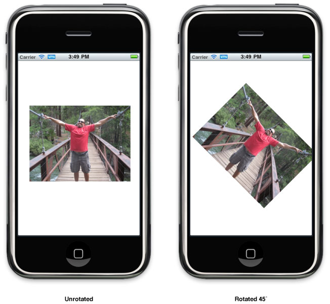
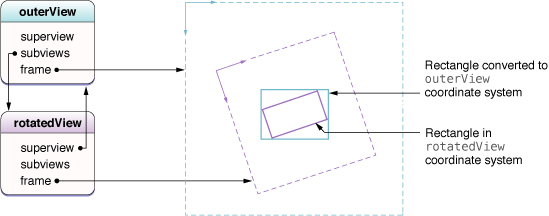
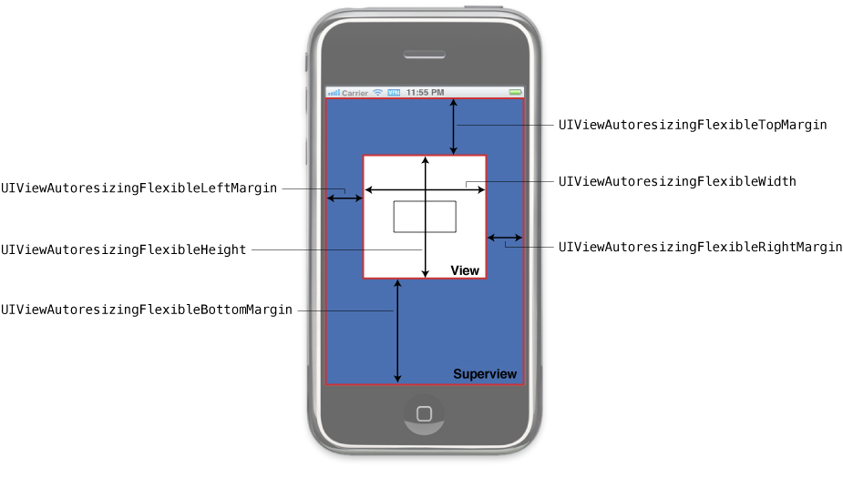

记录关于学习过的 iOS 文档
视图
因为视图对象是应用程序与用户交互的主要方式，它有很多职责。这里仅是很小方面：
- 布局和子视图管理
- 视图定义了相对于父视图的自身默认缩放行为。
- 视图可以管理子视图的列表。
- 视图可以重写子视图的尺寸和位置。
- 视图可以把在它的坐标系统的点转换成其他视图或窗口的坐标系统的点。
- 绘制过程和动画效果
- 视图在它的矩形区域内绘制内容。
- 一些视图属性可以被动画成新的值。
- 事件处理过程
- 视图可以接收触摸事件。
- 视图参与响应者队列。
这一章节的焦点在创建，管理，和绘制视图的步骤和处理布局，视图层次结构的管理。关于如何在视图中处理触摸事件 (和其他事件) ，见 Event Handling Guide for iOS。
创建和配置视图对象
你可以使用编程方式或界面构造器创建视图作为自包含的对象，然后将它们组装到视图层次结构中使用。
使用界面构造器创建视图对象
最简单的创建视图的方式是使用界面构造器图形化的组装它们。在界面构造器中，你可以添加视图到你的界面，布置这些视图到层次结构，配置每一个视图的设置，和连接视图相关的行为到你的代码。因为界面构造器使用实时视图对象－意思是，视图类的真实实例－你在设计时看到的就是你在运行时看到的。你可以保存这些实时对象到 nib 文件中，它是保持对象状态和配置的资源文件。
通常创建 nib 文件是为了保存应用程序的其中一个视图控制器的完整视图层次结构。nib 文件的顶层通常包含一个单一视图对象代表你的视图控制器的视图。(视图控制器它自己通常代表文件的所有者对象。) 顶层的视图尺寸应该与目标设备适应并且包含所有其他将要呈现的视图。只保存视图控制器的视图层次结构的一部分是很罕见的 nib 文件用法。
当使用视图控制器与 nib 文件时，你只需要为视图控制器初始化相关的 nib 文件信息。视图控制器在相应时间处理视图的加载和卸载。如果你的 nib 文件没有与视图控制器关联，你可以手动使用 NSBundle 或 UINib 对象加载 nib 文件内容，它会在 nib 文件中使用数据重组你的视图对象。
更多关于如何使用界面构造器创建和配置你的视图的信息，见 Interface Builder User Guide。
关于视图控制器如何加载和管理与他们关联的 nib files，见 View Controller Programming Guide for iOS 中的 Creating Custom Content View Controllers。
更多关于如何以编程的方式从 nib 文件加载视图的信息，见 Resource Programming Guide 中的 Nib Files。
编程方式创建视图对象
如果你打算以编程方式创建视图，你可以使用标准的 allocation/initialization 方式。视图的默认初始化方法是 initWithFrame: ，它为视图设置初始尺寸和相对于它的父视图 (将来的父视图) 的定位。例如，创建一个新的通用 UIView 对象，你可以使用类似下面的代码：
1 | CGRect viewRect = CGRectMake(0, 0, 100, 100); |
注意：尽管所有视图都支持 initWithFrame: 方法，但也有一些首选的初始化方法你应该代替使用。关于自定义的初始化方法的信息，见该类的引用文档。
创建视图之后，你必须把它添加到窗口 (或窗口的其他视图中) 它才能变为可见的。如何添加视图到你的视图层次结构中，见 Adding and Removing Subviews。
设置视图的属性
UIView 类有几个已声明的属性控制视图的外观和行为。这些属性操作视图的尺寸和定位，视图的透明度，背景颜色，和它的渲染行为。这些属性都有相应的默认值你可以根据需要更改。你也可以在界面构造器使用 Inspector 窗口配置许多这些属性。
表 3－1 列出大多数常用的属性 (和一些方法) 和它们的使用方法描述。互相关联的属性被列在一起因此你可以见到影响视图某些方面的选项。
表 3-1 某些关键视图属性的用法
| Properties | Usage |
|---|---|
| alpha， hidden， opaque |
这些属性影响到视图的不透明度，alpha 和 hidden 属性直接更改视图的不透明度。 opaque 属性告诉系统它应该如何合成你的视图。设置这个属性为 YES 如果你的视图的内容是完全不透明的并且不需要在它底部显示任何其他视图的内容。设置为 YES 可以通过消除不需要的合成操作提升性能。 |
| bounds, frame, center, transform |
这些属性影响视图的尺寸和定位。center 和 frame 属性代表视图相对于它的父视图的定位。frame 也包括视图的尺寸。bounds 属性定义视图在它自己的坐标系统中的可见内容区域。 transform 属性被用作以一种复杂的方式将整个视图动画或移动。例如，你可以使用 transform 旋转或伸展视图。如果当前的转换不是恒等转换，那么 frame 属性值为未定义的并且会被忽略。 关于 bounds，frame，和 center 属性之间的关系，见 The Relationship of the Frame,Bounds,and Center Propertires。 关于转换如何影响视图，见 Coordinate System Transformations。 |
| autoresizingMask， autoresizeSubviews |
这些属性影响视图和它的子视图的自动调整尺寸行为。autoresizingMask 属性控制视图应该如何响应它的父视图的边界更改。autoresizeSubviews 属性控制当前视图的子视图是否自动调整尺寸。 |
contentMode, contentStretch, contentScaleFactor |
这些属性影响视图内部的内容的渲染行为。contentMode 和 contentStretch 属性决定在视图的宽度或高度变更时应该如何处理内容。contentScaleFactor 属性只在视图需要在高分辨率屏幕下自定义绘制行为时使用。 更多关于内容模式如何影响视图的信息，见 Content Modes。关于内容伸展区域如何影响你的视图，见 Stretchable Views。关于如何处理伸缩因素，见 Drawing and Printing Guide for iOS 中的 Supporting High-Resolution Screens In Views。 |
| gestureRecognizers， userInteractionEnabled， multipleTouchEnabled， exclusiveTouch |
这些属性影响你的视图如何处理触摸事件。gestureRecognizers 属性包含被绑定到视图的手势检测。其他属性控制视图支持哪些事件。 关于如何在视图响应事件，见 Event Handling Guide for iOS。 |
| backgroundColor， subviews， drawRect: 方法， layer， (layerClass 方法) |
这些属性和方法帮助你管理视图的实际的内容。在一个简单的视图中，你可以设置背景颜色和添加一个或多个子视图。subview 属性包含了只读的子视图列表，也提供了几个添加和清理子视图的方法。对于视图的自定义绘制行为，你必须重写 drawRect: 方法。 需要更多先进的内容，你可以直接在核心动画层工作。 要为视图指定一个完全不同类型的层，你必须重写 layerClass 方法。 |
关于视图所有常用食物基础属性，见 UIView Class Reference。
更多关于视图具体的属性，见视图的引用文档。
为视图将来的使用而添加标签
UIView 类包含标签 (tag) 属性，你可以用整型值来标记单个视图对象。你可以使用标签独特标记一个你的视图层次结构中的视图对象并且在运行时搜索这些视图。(基于标签搜索的速度快过遍历视图层次结构。) 标签属性的默认值是 0。
要搜索已标签的内容，使用 UIView 的 viewWithTag: 方法。这个方法对接收的参数和它的子视图执行深度优先搜索。它不搜索父视图和视图层次结构的其他部分。因此，从视图层次结构的根视图搜索会搜索全部视图而指定特定的视图则会搜索该视图的子集。
创建和管理视图层次结构
管理视图层次结构是开发应用程序用户界面的重要部分。视图的组织方式会影响应用程序的外观和应用程序如何响应变更和事件。例如，视图层次结构中的父与子关系决定哪个对象可以处理指定的触摸事件。同样，父与子关系也定义了每个视图如何响应界面方向的变更。
图 3-1 的案例说明如何布局视图为应用程序创建一个期望的视觉效果。在这个时钟应用程序的案例中，视图的层次结构是不同来源的视图混合。标签栏和导航视图是特殊的视图层次结构它们提供了标签栏和导航控制器对象来管理总体用户界面的一部分。这两个栏之间的所有东西都属于时钟应用程序提供的自定义层级结构。
图 3-1 时钟应用程序内的视图层次结构

这里有几种方式在 iOS 中建立视图层次结构，包使用在界面构造器中以图形化方式和在代码中以编程方式。下面的章节说明如何组合你的视图层次结构，完成之后，会说明如何在层次结构中查找视图和在不同的视图坐标系统之间转换。
添加和移除子视图
界面构造器是构建视图层次结构最便利的方法因为它提供了图形化方式组合视图，可见直观看到视图之间的关系，和明确知道视图如何在运行时的呈现。当使用界面构造器时，你可以把结果保存在 nib 文件中，当应用程序在运行时可以按需要加载相应的视图。
如果你喜欢使用编程方式创建，你可以创建并初始化它们然后使用下面的方法安排它们到到层次结构：
- 要添加子视图到父视图，调用父视图的 addSubview:。这个方法将子视图添加到父视图的子视图列表的结尾。
- 要子视图插入到父视图的子视图列表中间，可以调用父视图的 insertSubview:… 方法。插入到列表中间的子视图的视图视觉位置会在所有后面进入列表的视图背后。
- 要重新排序父视图内部已有的子视图，调用父视图的 bringSubviewToFront:,sendSubviewToBack:，或 exchangeSubviewAtIndex:withSubviewAtIndex: 方法。使用这些方法比移除子视图然后重新插入更快。
- 要从父视图移除子视图，调用子视图 (非父视图) 的 removeFromSuperview 方法。
当添加子视图到父视图时，子视图的当前框架矩形代表它在父视图的初始定位。子视图超出父视图可见边界的框架默认不会被裁减。如果你想子视图能被父视图剪切，你必须明确设置父视图的 clipsToBounds 属性为 YES。
大多数常用的添加子视图到其他视图的案例都发生在几乎所有应用程序的 application:didFinishLaunchingWithOptions: 方法中。清单 3-1 说明这个方法的从应用程序主视图控制器安装视图到应用程序窗口的版本。窗口和视图控制器都是被保存在应用程序的主 nib 文件，它们在这个方法被调用之前被加载。也就是说，被视图控制器管理的视图层次结构实际上没有被加载直到 view 属性被访问之前。
清单 3-1 添加视图到窗口
1 | - (BOOL)application:(UIApplication *)application didFinishLaunchingWithOptions:(NSDictionary *)launchOptions |
另一个常用的添加子视图到视图层次结构的位置是在视图控制器的 loadView 或 viewDidLoad 方法。如果你使用编程方式构建你的视图，你可以把创建视图的代码放置到视图控制器的 loadVIew 方法中。无论你是使用编程方式或从 nib 文件加载它们，你都可以在 viewDidLoad 方法中添加额外的视图配置代码。
清单 3-2 展示了一个简单的应用程序 UICatalog:Creating and Customizing UIKit Controls (Obj-C and Swift) 中的 TransitionsViewController 类的 viewDidLoad 方法。TransitionsViewController 类管理两个视图之间过渡的关联动画效果。应用程序通过加载 nib 文件初始化视图层次结构 (由一个根视图和工具栏组成)。这段代码在 viewDidLoad 方法执行完成后创建容器视图和图像视图用作管理过渡效果。容器视图的目的是简化实现两个图像视图之间的过渡动画效果所需要的代码。容器视图自己没有实际的内容。
清单 3-2 添加视图到已有的视图层次结构
1 | - (void)viewDidLoad |
重要提示：父视图自动 retain 它们的子视图，因此之后嵌入的子视图会安全的释放。事实上，是推荐这样做的因为它防止你的应用程序长期保留视图导致以后的内存泄漏。只需记住如果你从父视图移除子视图并打算重复使用它，你必须再次 retain 子视图。从父视图移除子视图前 removeFromSuperview 方法会自动释放子视图。如果你下次重复使用前没有 retain 子视图，该视图将会被释放。
更多关于 Cocoa 的内存管理公约，见 Advanced Memory Management Programming Guide。
当你添加子视图到其他视图时，UIKit 通知父视图和子视图这个更改。如果你实现自定义视图，你可以截取这些通知通过重写一个或多个：willMoveToSuperview:，willMoveToWindow:，willRemoveSubview:，didAddSubview:，didMoveToSuperview,或 didMoveToWindow 方法。你可以使用这些通知更新任何有关视图层次结构的状态信息或执行额外的任务。
创建了视图层次结构后，你可以使用视图的 superview 和 subviews 属性以编程方式实现导航。每个视图的 window 属性包含当前显示视图的窗口 ( 如果有)。因为根视图在视图层次结构中没有父级，它的 superview 属性被设置为 nil。对于在当前屏幕的视图，窗口对象是视图层次结构的根视图。
隐藏视图
要从视觉上隐藏视图，你可以将 hidden 属性设置为 YES 或更改它的 alpha 属性为 0.0。隐藏的视图不再从系统接收触摸事件。并且，隐藏的视图不参加与视图层次结构关联的自动调整尺寸和其他布局操作。因此，隐藏的视图提供了便利的替代从视图层次结构中移除视图，尤其是你计划将会再次显示视图时。
重要提示：若你隐藏的视图是当前第一个响应者，视图不会自动移除它的响应者身份。事件传递的目标仍然是第一个响应者，也就是被隐藏的视图。要避免这个情况，你应该在隐藏视图时强制使视图移除它的第一响应者状态。更多关于响应队列的信息，见 Evebt Handling Guide for iOS。
如果你想视图在隐藏和显示过渡时添加动画效果，你必须使用视图的 alpha 属性。hidden 属性是不可动画的属性，因此你更改属性后会立即生效。
在视图层次结构中定位视图
有两种方式在视图层次结构定位视图：
- 在适当位置保存相应视图的指针，例如在拥有视图的视图控制器中。
- 为每个视图的 tag 属性分配无符号整形并使用 viewWithTag: 方法定位它。
保存相应视图的引用是最通常用的定位视图方式并且访问视图非常方便。如果你使用界面构造器构建你的视图，你可以在 nib 文件 (包括代表管理着控制器对象的文件拥有者对象) 中使用 outlet 将对象连接到另一个。如果你使用编程方式，你可以在私有成员变量保存对这些视图的引用。无论你使用 outlets 或私有成员变量，你都要负责按需要良好的保持和释放它们。最好的确保对象被正确保留和释放的方式是使用 declared properties (@property (<#attributes#>) <#type#> <#name#>;)。
Tag 是减少硬编码依赖的有效方式并且支持更多动态和灵活的解决方案。与保存视图的指针相比，你可以使用 tag 定位它。Tag 也是更持久的引用视图方式。例如，你如果你想保存应用程序当前可见视图的列表，你可以将每个可见视图的 tag 写到文件中。这比归档实际视图对象要简单，尤其在你正在追踪的视图仅是当前可见的情况下。当你的应用程序以后再被加载时，你就可以使用已保存的 tag 列表重新创建你的视图设置每个视图的可见性，从而使视图层次结构回到之前的状态。
翻转，伸展，和旋转视图
每个视图都有关联的仿射转换，你可以用来翻转，伸展，或旋转视图的内容。视图转换 (transforms) 改变视图最终被渲染的外观并且提供用作实现滚动，动画效果，或其他视觉效果。
视图的 transform 属性包含 CGAffineTransform 结构体应用转换效果。默认情况下，这个属性设置为恒等转换，不会修改视图的外观。你可以随时为这个属性分配新的转换。例如，旋转视图 45 度，你可以使用下面的代码：
1 | // M_PI/4.0 is one quarter of a half circle, or 45 degrees. |
应用上面的代码到视图中后视图将会围绕中心顺时针旋转。图 3-2 说明对嵌入应用程序的图片应用这段代码将会看到怎么样的转换效果。
图 3-2 旋转视图 45 度

当对视图应用了多个转换效果时，添加转换效果到 CGAffineTransform 结构体中的顺序是相当重要的。旋转视图然后翻转它不等于翻转它然后旋转。即使旋转和翻转的数量是一样的情况，转换效果的顺序会影响到最终的后果。除此之外，所有你添加的到视图的转换效果都是被应用为相对视图的中心点。因此，应用的旋转系数是围绕着视图的中心点旋转。伸展视图的宽度和高度不会变更它的中心点。
更多关于创建和使用仿射转换的信息，见 Quartz 2D Programming Guide 中的 Transforms。
在视图层次结构中转换坐标
在不同的时间，尤其是处理事件时，应用程序可能需要转换坐标值从一个参考的框架到另一个。例如，触摸事件报告每个触摸在窗口的坐标系统中的位置但视图对象通常需要在视图本地坐标系统的信息。 UIView 类定义了下面的方法将坐标从视图的本地坐标系统转入或转出：
convert…:fromView: 方法从一些其他视图的坐标系统转换到当前视图的本地坐标系统 (边界矩形)。反过来，convert…:toView: 方法从当前视图的坐标系统 (边界矩形) 转换到指定视图的坐标系统。如果将这些函数的引用视图指定为 nil，这些转换会转入和转出成 (to and from) 包含该视图的窗口坐标系统。
除了 UIView 的转换方法，UIWindow 类也定义了几个转换方法。这些方法与 UIView 版本相似除了转换的目标是视图的本地坐标系统，这些方法转换的目标是窗口的坐标系统。
当在一个已旋转的视图中转换坐标时，UIKit 根据“你希望返回的矩形是代表被源矩形覆盖的屏幕区域”的猜测来转换矩形。图 3-3 例子说明旋转是如何导致矩形的尺寸在转换期间的被更改。在这个图中，外部视图包含已旋转的子视图。从子视图的坐标系统转换到父视图的坐标系统后的产生一个物理上较大的矩形。这个较大的矩形实际上是较小的矩形在外部视图的边界它完全包围已旋转的矩形。
图 3-3 在已旋转的视图中转换值

在运行时调整视图的尺寸和位置
每当视图的尺寸更改时，它的子视图尺寸和位置也必须相应的更改。UIView 支持在视图层次结构中自动和手动布局视图。对于自动布局，你只需设置每个视图应该如何跟随当父视图调整时的规则，然后就可以不管以后的调整操作了。对于手动布局，根据需要手动调整视图的尺寸和位置。
准备布局变更
每当下面的事件在视图中发生时会产生布局变更：
- 视图的边界矩形的尺寸更改。
- 界面方向发生更改，通常会在根视图的边界矩形触发这个事件。
- 与核心动画效果子层集合关联的视图层发生变更并和需要布局。
- 应用程序通过调用视图的 setNeedsLayout 或 layoutIfNeeded 方法产生强制布局。
- 应用程序通过调用视图的底层的层对象的 setNeedsLayout 方法强制布局。
使用自动调整尺寸规则自动处化理布局变更
当你更改视图的尺寸时，被嵌入的子视图的位置和尺寸通常需要根据父视图的新尺寸变更。父视图的 autoresizesSubviews 属性决定所有子视图是否需要调整。如果属性设置为 YES，视图会使用每个子视图的 autoresizingMask 属性决定子视图的位置和尺寸。每个子视图的尺寸变更会对它们的子视图触发同样的布局调整。
在视图层次结构中的每个视图中，设置视图的 autoresizingMask 属性一个适当的值对自动化处理布局变更是非常重要的一部分。表 3-2 列出你可以应用的自动调整选项并且描述了它们在布局操作时的效果。你可以使用 OR 运算符组合这些常量或把它们分配到 autoresizingMask 属性之前相加。如果你是使用界面构造器组合你的视图，你可以使用 Autosizing inspector 设置这些属性。
表 3-2 自动调整掩码常量
| 自动调整掩码 | 描述 |
|---|---|
| UIViewAutoresizingNone | 视图不会自动调整。(这是默认值。) |
| UIViewAutoresizingFlexibleHeight | 当父视图高度变更时视图的高度也变更。如果这个常量没被包含，视图的高度将不会变更。 |
| UIViewAutoresizingFlexibleWidth | 当父视图宽度变更时视图的宽度也变更。如果这个常量没被包含，视图的宽度将不会变更。 |
| UIVIewAutoresizingFlexibleLeftMargin | 视图的左边缘和父视图的左边缘之间的距离根据需要增长或缩短。如果这个常量没有设置，视图的左边缘与父视图的左边缘之间的距离保持固定。 |
| UIViewAutoresizingFlexibleRightMargin | 视图的右边缘和父视图的右边缘之间的距离根据需要增长或缩短。如果这个常量没有设置，视图的右边缘与父视图的右边缘之间的距离保持固定。 |
| UIViewAutoresizingFlexibleBottomMargin | 视图的底部边缘和父视图的底部边缘之间的距离根据需要增长或缩短。如果这个常量没有设置，视图的底部边缘与父视图的底部边缘之间的距离保持固定。 |
| UIViewAutoresizingFlexibleTopMargin | 视图的顶部边缘和父视图的顶部边缘之间的距离根据需要增长或缩短。如果这个常量没有设置，视图的顶部边缘与父视图的顶部边缘之间的距离保持固定。 |
图 3-4 以图像化方式表示自动调整掩码中的选项如何在视图中应用。已给定常量说明视图的特定的方面是灵活的和父视图的边界变更时视图也会相应变更。没给定常量说明视图的布局在某些方面是固定的。当你在视图的一个轴上配置一个或多个灵活属性时，UIKit 会把尺寸更改平均的分配到相应空间。
图 3-4 视图的自动调整掩码常量

最简单配置自动调整规则的方式是使用界面构造器的 Size inspector 中的自动调整大小控制。在自动调整大小界面的宽度和尺寸指示器与上图中灵活的宽度和高度常量拥有相同的行为。但是，边缘指示器的行为和使用与前面的效果相反。在界面构造器中，已给定边缘指示器意味着边缘有固定的尺寸而没给定边缘指示器意味着边缘有灵活的尺寸。幸运的是，界面构造器提供了一个动画效果让你清楚自动调整行为如何影响你的视图。
重要提示： 如果视图的 transform 属性不包含恒等转换，那么它的视图的框架是不明确的因此它的自动调整结果也是。
所有的自动调整尺寸规则已经对受影响的视图应用后，UIKit 返回每个视图并给它机会对父视图做一些必要的手动调整。更多关于如何手动管理视图的布局信息，见 Tweaking the Layout of Your Views Manually。
手动调整你的视图布局
每当你的视图尺寸发生变化时，UIKit 应用视图的子视图的自动调整尺寸行为然后调用视图的 layoutSubviews 方法让它可以手动更改。当它们自己的自动调整尺寸行为没有产生你想要的结果时你可以在自定义视图内实现 layoutSubviews 方法。在这个方法的实现中你可以做以下事情：
- 调整任意直系子视图的位置和尺寸。
- 添加或移除子视图或核心动画层。
- 通过调用 setNeedsDisplay 或 setNeedsDisplayInRect: 方法强制子视图重绘。
应用程序经常手动布局子视图的位置是在实现一个巨大的可滚动区域时。因为在一个巨大的视图中滚动它的内容是不切实际的，应用程序通畅会实现一个包含小片视图编号的根视图。每一个小片代表滚动内容的一部分。当滚动事件发生时，根视图调用 setNeedsLayout 方法初始化布局变更。它的 layoutSubviews 方法基于已发生的滚动数量重新定位分片视图。对于已滚动出视图可见区域的片，layoutSubviews 方法将该片移动到边缘，在处理过程中更换它们的内容。
当你在写布局代码时，请确认你的代码已经过以下方面测试：
- 更改视图方向确认布局在所有支持的界面方向都正确。
- 确认你的代码适当的响应状态栏高度的更改。当电话呼叫是活动时，状态栏高度会提升，而当用户挂断电话时，状态栏尺寸会降低。
关于自动调整行为如何影响视图的尺寸和位置，见 Handling Layout Changes Automatically Using Autoresizing Rules。
关于如何实现分片，见案例 ScrollViewSuite。
在运行时修改视图
当应用程序从用户中接收到输入后，它们会在响应输入调整用户界面。应用程序可能重新排列视图，更改尺寸或位置，隐藏或显示它们，或加载一个新的完整视图集合。在 iOS 应用程序中，这里是让你执行这些类型的操作的几个位置和途径：
- 在视图控制器中：
- 视图控制器在显示之前创建它的视图。视图控制器可以从 nib 文件加载视图或使用编程方式创建它们。当这些视图长时间不需要时，它会抛弃它们。
- 当设备变更方向时，视图控制器可能会调整视图的尺寸和位置适配。作为新方向调整的一部分，它可能会隐藏一些视图和显示其它。
- 当视图控制器管理着可编辑的内容，进入编辑模式时它可能会调整视图层级结构。例如，它可能添加额外的按钮和其他控件方便的编辑它的内容的各个方面。也可能需要调整视图的尺寸容纳额外的控件。
在动画效果块中：
- 你想在用户界面中的不同集合的视图之间过渡，你可以从动画效果块内容隐藏一些视图和显示其他视图。
- 在实现指定的效果时，你可以使用一个动画效果块修改各方面的视图属性。例如，用动画更改视图的尺寸，你会更改它的框架矩形的尺寸。
其他方式：
- 当触摸事件或手势发生时，你的界面可能会通过加载新的视图集合或更改当前的视图集合来响应事件。关于处理事件的信息，见 Event Handling Guide for iOS。
- 当用户与滚动视图交互时，一个巨大的可滚动区域会隐藏和显示已分片的子视图。更多支持可滚动内容的信息，见 Scroll View Programming Guide for iOS。
- 当键盘出现时，你需要重新定位或调整视图使它们不会位于键盘的下方。关于如何与键盘交互的信息，见 Text Programming Guide for iOS。
视图控制器是初始化更改视图的常用位置。因为视图控制器管理与正在显示的内容相关的视图层次结构，它最终负责这些视图发生的所有事情。当正在加载它的视图或正常处理方向更改时，视图控制器可以添加新的视图，隐藏或替换已有的视图，和做任意数量的更改为视图的显示做准备。如果你的内容声明了可编辑，在 UIViewController 中的 setEditing:animated: 方法给你一个位置过渡为你的视图到它的可编辑版本。
动画效果块是另一个常用的初始化与视图相关的更改的位置。动画效果支持置入到 UIView 类中让它轻松的用动画形式更改视图的属性。你也可以使用 transitionWithView:duration:options:animations:completion: 或 transitionFromView:toView:duration:options:completion: 方法将完整的视图集合更换成新的一个。
更多关于动画视图和初始化视图过渡效果的信息，见 Animations。
更多如何使用视图控制器管理视图相关的行为，见 View Controller Programming Guide for iOS。
与核心动画层交互
每个视图对象都有专用的核心动画层用来管理视图在屏幕上的呈现和动画效果。尽管你可以对视图对象做很多事情，你也可以按需要直接与相应的层对象工作。视图的层对象被保存在视图的 layer 属性。
修改与视图关联的层类
与视图关联的层的类型不能在视图创建后被更改。因此，每个视图的使用类方法 layerClass 为层对象指定类。这个方法默认的实现是返回 CALayer 类并且这个值只接受 CALayer 的子类，通过重写这个方法，返回不同的值。你可以更改这个值使用不同类型的层。例如，如果你的视图使用分片显示一个巨大的可滚动区域，你可以使用 CATileLayer 类返回给视图。
layerClass 方法的实现应该只是简单的创建想要的类对象并且返回它。例如，视图使用分片的方式将会使用下面的代码重写这个方法：
1 | + (Class)layerClass |
每一个视图调用它的 layerClass 方法的时间都比它的初始化处理更早并将已返回的类用于创建它的层对象。除此之外，视图总会将它自己分配为它的层对象的委托。在这一点上，视图拥有它的层并且视图与层之间的关系必须不改变。你也必须不能分配同样的视图作为其他层对象的委托。更改所有者关系或视图的委托关系将导致绘制问题和应用程序出现不可预料的崩溃。
更多关于核心动画效果提供的不同类型的层对象的信息，见 Core Animation Reference Collection。
在视图中嵌入层对象
如果你主要打算与层对象工作而不是与视图，你可以按需要把自定义层对象合并到你的视图层次结构中。自定义层对象是 CALayer 类的一个实例它不被视图拥有。通常使用编程方式创建自定义层然后使用核心动画例程合并它们。自定义层不接收事件不参与响应者队列但会绘制它们自己和响应它们的父视图尺寸更改或层根据核心动画效果规则分层。
清单 3-3 的例子从视图控制器的 viewDidLoad 方法创建一个自定义层对象并添加它到它的根视图中。这个层对象被用作以动画方式显示静态图片。除了添加层到视图本身外，你也可以添加它到视图底层的层 (underlying layer)。
清单 3-3 添加自定义层到视图
1 | - (void)viewDidLoad { |
你可以添加任意数量的子层并安排它们到子层层次结构，如果你想的话。然而在某些时候，这些层必须被附加到视图的层对象中。
关于如何与这些层直接工作，见 Core Animation Programming Guide。
定义自定义视图
如果标准系统视图无法满足你的需要，你可以定义自定义视图。自定义视图能让你完全控制应用程序内容的外观和如何处理与内容的交互。
说明： 如果你使用 OpenGL ES 进行绘制，你应该使用 GLKView 类替代 UIVIew 的子类。更多关于如何使用 OpenGL ES 绘制的信息，见 OpenGL ES Programming Guide for iOS。
实现自定义视图的清单
自定义视图的工作是呈现内容和管理与内容的交互。一个成功的自定义视图实现不仅涉及到绘制和事件处理。下面的清单包含许多重要的方法在实现自定义视图时你可以重写这些方法 (你可以提供的行为)。
- 为你的视图定义外观的初始化方法：
- 如果计划以编程方式创建视图，重写 initWithFrame: 方法或定义自定义初始化方法。
- 如果计划从 nib 文件加载，重写 initWothCoder: 方法。使用这个方法初始化你的视图并把它放入已知状态。
- 实现 dealloc 方法处理自定义数据的清除操作。
- 要处理自定义视图的绘制，需要重写 drawRect: 方法并在这里实现绘制代码。
- 设置视图的 autoresizingMask 属性定义它的自动调整行为。
- 如果你的视图类管理一个或多个完整的子视图，要做以下事情：
- 在视图的初始化序列期间创建这些子视图。
- 在创建时设置每个子视图的 autoresizingMask 属性。
- 如果你的子视图需要自定义布局，重写 layoutSubviews 方法并且在那实现你的布局代码。
- 要处理基于触摸的事件，做以下事情：
- 通过使用 addGestureRecognizer: 方法绑定手势识别到视图中。
- 在你想自己处理触摸的情景，重写 touchesBegan:withEvent:，touchesMoved:withEvent:，touchesEnded:withEvent:，和 touchesCancelled:withEvent: 方法。(记住你应该总是重写 touchesCancelled:withEvent: 方法，无论你是否重写了其他的触摸相关的方法。)
- 如果你让视图的打印版本看起来与屏幕版本不同，需要实现 drawRect:forViewPrintFormatter: 方法。关于如何在你的视图中实现对打印的支持，见 Drawing and Printing Guide for iOS
除了重写方法外，记住还有很多你可以操作的视图已有的属性和方法。例如，contentMode 和 contentStretch 方法能让你更改视图的最终已渲染的外观并且可以最好的重绘自己的内容。除了 UIView 类它自己外，还有视图的底层 CALayer 对象的许多方面你都可以直接或间接配置的。你甚至可以更改层对象它自己的类。
更多关于视图类的方法和属性的信息，见 UIView Class Reference。
初始化你的自定义视图
每个你定义的新视图对象都应该包含自定义的初始化方法 initWithFrame:。这个方法负责在创建时把类初始化并把你的视图对象放入已知状态。你可以在代码中使用编程方式创建视图的实例时使用这个方法。
清单 3-4 展示一个标准的 initWithFrame: 方法实现的骨骼。这个方法首先调用方法的继承实现然后在返回已初始化对象之前将实例变量和类的状态信息初始化。首先调用继承实现是传统方式如果在这一步发生未提，你可以中断初始化代码并返回 nil。
清单 3-4 初始化视图子类
1 | (id)initWithFrame:(CGRect)aRect { |
如果你计划从 nib 文件加载你的自定义视图类的实例，你应该注意在 iOS 中，加载 nib 的代码不会使用 initWithFrame: 方法实例化新的视图对象，而是使用 initWithCoder: 方法它属于 NSCoding 协议的一部分。
即使你的视图采用了 NSCoding 协议，界面构造器也不会知道关于你的视图的自定义属性因此也不会编码这些属性到 nib 文件中。因此，你自己的 initWithCoder: 方法应该始终执行无论初始化代码是否能把视图放入已知状态。你也可以实现在你的视图类中的 awakeFromNib 方法并且使用这个方法执行额外的初始化操作。
实现你的绘制代码
对于需要自定义绘制的视图，你需要重写 drawRect: 方法并在此绘制。自定义绘制只在最后才推荐使用。通常，如果你能使用其他视图呈现你的内容，那才是首选。
你的 drawRect: 方法的实现过程应该明确一件事：绘制内容。这个方法不是用来更新应用程序的数据结构或执行与绘制无关的任务的地方。它应该配置绘制环境，绘制内容，和尽可能快的退出这个方法。如果你的 drawRect: 方法可能频繁的调用，你应该尽可能的优化绘制代码并且每次调用这个方法时尽可能少的绘制内容。
调用你的视图的 drawRect: 方法之前，UIKit 会为你的视图配置基础绘制环境。特别是，它会创建图形上下文和调整坐标系统并且裁剪它的区域适配你的视图的坐标系统和可见边界。因此，你的 drawRect: 方法被调用后，你可以开始绘制你的内容使用原生绘制技术例如 UIKit 和 Core Graphics 。你可以使用 UIGraphicsGetCurrentContent 函数获取当前图形上下文的指针。
重要提示：当前图形上下文只在视图的 drawRect: 方法调用时生效一次。UIKit 会为随后每次调用这个方法创建不同的图形上下文，你不应该尝试缓存这个对象在以后使用。
清单 3-5 展示一个简单的 drawRect: 方法的实现它绘制一个 10 像素点宽的红色边框的视图。因为 UIKit 绘制操作使用 Core Graphics 作为它们的底层实现过程，你可以混合绘制调用，获得你想要的结果。
清单 3-5 绘制方法
1 |
|
如果你清楚你的视图绘制代码总是以不透明的内容覆盖视图的整个表面，你可以设置视图的 opaque 属性为 YES 提升系统性能。当你标记了视图为不透明时，UIKit 会避开在位于视图背后的绘制代码。这不是唯一缩减绘制花费的时间的方式但也最大限度减少视图和其他内容之间的合成工作。因此，如果你的视图的内容是完全不透明的那么应该设置这个属性为 YES。如果你的视图不能保证内容总是不透明的，你应该设置这个属性为 NO。
另一个提升绘制性能的方式，尤其在滚动过程中，是设置视图的 clearsContextBeforeDrawing 属性为 NO。当这个属性设置为 YSE 时，在你的 drawRect: 方法调用之前 UIKit 把将要被 drawRect: 方法更新的区域自动填充为半透明的黑色。设置这个属性为 NO 会消除填充操作的开销但会加重你的应用程序通过 drawRect: 方法填充更新矩形的内容的负担。
事件响应
视图对象是响应者对象－UIResponder 类的实例－因此有接收触摸事件的能力。当触摸事件发生时，窗口调度相应的事件对象到发生触摸的视图。如果你的视图对事件不敢兴趣，它可以忽略或传递它到响应者队列让不同的对象处理。
除了直接处理触摸事件外，视图也可以使用手势识别检测敲击，滑动，捏，和其他类型常用触摸相关的手势。手势识别完成困难的追踪触摸事件工作并确认它们是正确和标准的触发手势。你的应用程序除了可以追踪触摸事件，你还可以创建手势识别，为它分配适当的触发对象和行动方法，然后使用 addGestureRecognizer: 方法安装到视图中。当相应的手势发生后手势识别会调用行动方法。
如果你准备直接处理事件，你可以在你的视图中实现下面的方法：它们的细节在 Event Handling Guide for iOS: 描述。
视图的默认行为是同时只响应一个触摸事件。如果用户按下第二根手指，系统会忽略该触摸事件并且不会向视图报告。如果你计划在你的视图的事件处理方法追踪多手指手势，你需要通过设置视图的 multipleTouchEnabled 属性为 YES 启用多点触控事件。
某些视图，例如标签和图像，默认完全禁用事件处理。你可以通过更改视图的 userInteractionEnabled 属性值控制视图是否允许接收触摸事件。你可以暂时将这个值设置为 NO 防止用户在长时间的运算等待时操作视图的内容。要阻止事件到达你的所有视图，你也可以使用 UIApplication 对象的 beginIgnoringInteractionEvents 和 endIgnoringInteractionEvents 方法。这些方法影响整个应用程序的事件的发出，不只是单个视图。
说明：UIView 的动画效果方法通常在进行动画效果处理时禁用事件处理。你可以通过配置相应的动画效果重写这个行为。更多关于动画效果的执行，见 Animations。
由于需要处理触摸事件，UIKit 使用 UIView 的 hitTest:withEvent: 和 pointInside:withEvent: 方法决定事件是否在给定视图的边界内发生。尽管很少需要重写这些方法，你也可以为视图实现自定义触摸行为。例如，你可以重写这些方法防止子视图处理触摸事件。
清除你的视图
如果你的视图类分配了任意内存，保存了对任意自定义对象的引用，或保留了当视图释放时也必须释放的资源，那么你必须实现 dealloc 方法。当你的视图的引用记数到达零并且到达了销毁时间那么系统会调用 dealloc 方法。这个方法的实现过程应该释放所有对象和视图持有的资源然后调用已继承的实现过程，如清单 3-6 的代码。你不应该使用这个方法执行任何其他类型的任务。
清单 3-6 实现 dealloc 方法
- (void)dealloc {
// Release a retained UIColor object
[color release];
// Call the inherited implementation
[super dealloc];
}
系列文章
iOS 翻译 《View Programming Guide for iOS：Introduction》
iOS 翻译 《View Programming Guide for iOS：View and Window Architecture》
iOS 翻译 《View Programming Guide for iOS：Windows》
iOS 翻译 《View Programming Guide for iOS：Views》